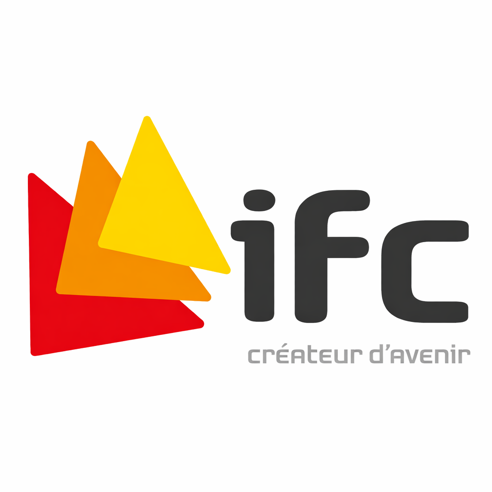

BTS SIO : Option SISR
Formation spécialisée en administration des systèmes et des réseaux, apprentissages pratiques et projets professionnels.
📚 Presentation du diplome
Le BTS Services Informatiques aux Organisations (SIO) forme des professionnels capables d'assurer la gestion, l'exploitation et la maintenance des systemes informatiques. L'option SISR est orientee vers les reseaux et la securite.
skills.chart
SISR / 2024-2026
8
SKILLS
🏫 Formation

Etablissement : IFC Marseille
Periode : 2024 – 2026
Option : SISR — Solutions d'Infrastructure, Systemes et Reseaux